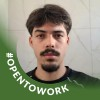

Auxiliar administrativo
Atendimento e recepção de motoristas, direcionamento de demandas operacionais, conferência de pagamentos e apoio às rotinas administrativas do setor.
Currículo profissional · Teresina, PI
Profissional com experiência em rotinas administrativas, atendimento e organização de processos. Atualmente cursando Análise e Desenvolvimento de Sistemas.

Atendimento e recepção de motoristas, direcionamento de demandas operacionais, conferência de pagamentos e apoio às rotinas administrativas do setor.
Apoio à rotina de escritório, organização de viagens, redação de e-mails, gestão de pagamentos e recibos e organização e digitalização de documentos.
Atendimento presencial e telefônico, organização de agenda, triagem, registro de informações odontológicas e apoio em exames de radiografia.